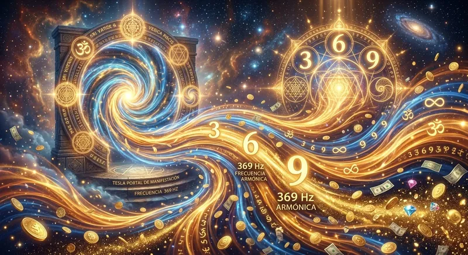

Acuéstate cinco minutos en silencio y analiza la angustia que sientes cuando se acerca la fecha límite de tus facturas. Sientes esa molesta presión en el pecho, la mente acelerada repasando tus cuentas bancarias y esa voz persistente en tu cabeza que te pregunta constantemente cómo vas a salir de las deudas este mes. Si has pasado semanas intentando repetir afirmaciones positivas frente al espejo, haciendo mapas de visión o probando de forma intuitiva la frecuencia 369 hz para manifestar dinero rápido sin obtener un solo dólar inesperado, estás a punto de descubrir una verdad incómoda: el dinero no responde a tus deseos lógicos ni a tus súplicas conscientes; responde única y exclusivamente a la firma electromagnética de tu mente subconsciente.
El legendario físico e inventor Nikola Tesla obsesionó a la comunidad científica al afirmar que el universo completo está gobernado por energía, frecuencia y vibración. Tesla descubrió que los números 3, 6 y 9 no eran una invención humana, sino la matemática del vórtice por la cual la energía invisible se densifica hasta convertirse en materia tangible. Cuando aprendes cómo manifestar dinero rápido con frecuencia 369 , no estás apelando a la suerte ni al pensamiento mágico: estás aplicando ingeniería acústica directa sobre la red neuronal de tu encéfalo para sintonizar el canal vibracional de la abundancia financiera.
La Física del Dinero: Por Qué la Escasez es un Bucle Electroquímico
Desde la perspectiva de la neurociencia moderna, el dinero es una representación abstracta de valor y flujo energético. Sin embargo, cuando vives atrapado en la preocupación financiera, tu cerebro entra en un estado de estrés crónico dominado por ondas Beta elevadas (superiores a 25 Hz). En este rango de frecuencia, tu sistema nervioso produce ráfagas constantes de cortisol y adrenalina, bloqueando tu capacidad de intuición, oportunidad y atracción.
Cuando emites un pulso cerebral cargado de "necesito pagar esto urgentemente", la señal que recibe el campo cuántico es de carencia absoluta. La ley fundamental de la física armónica establece que dos frecuencias diferentes no pueden entrar en resonancia de fase. Si tu estado biológico vibra en necesidad, bloquearás automáticamente cualquier oportunidad de riqueza, sin importar cuánto trabajes o cuántas horas le dediques a tu empleo.
⚡ EL PATRÓN VÓRTICE DE TESLA Y EL SUBCONSCIENTE
El número 3 representa la chispa creativa inicial; el 6, la amplificación de la energía en el plano astral o mental; y el 9, la manifestación completa en el mundo físico. La frecuencia 369 tesla para abundancia genera una onda portadora que rompe la barrera del filtro crítico cerebral, permitiendo que la información de riqueza penetre directamente en la matriz de tu subconsciente.
Para romper la inercia de la escasez, debes entender que existen barreras invisibles en tu mente. Muchos practicantes fracasan porque caen presa de los 7 mitos de la ley de atraccion que circulan en internet, creyendo que basta con sentarse a desear riqueza mientras la mente profunda continúa operando desde el miedo a la quiebra.
Los 4 Errores Fatales al Usar la Frecuencia 369 Hz para Manifestar Dinero
Si has intentado aplicar el código 369 o has escuchado audios en internet sin ver un solo aumento en tus ingresos, probablemente estés cometiendo uno de estos cuatro errores estructurales:
01. Escuchar Audio Comprimido
Usar archivos MP3 de baja calidad en plataformas gratuitas que destruyen las microfrecuencias activas de arrastre neural.
02. Estado Cerebral Inadecuado
Intentar manifestar en ondas Beta estresadas en lugar de inducir primero a las neuronas al rango Alfa o Theta.
03. Forzar la Visualización
Obligarte a "imaginar billetes" con duda interna, lo cual duplica la señal subconsciente de escasez y frustración.
04. Interferencia por Ruido Digital
Usar altavoces de teléfono o auriculares defectuosos que impiden la separación estéreo necesaria para la sincronización hemisférica.
Cuando logras eliminar estos obstáculos, el subconsciente cede de inmediato. No obstante, el factor más crítico y devastador de todos es el tipo de archivo que estás introduciendo en tus oídos cada noche.
La Gran Estafa del Streaming: Por Qué los Audios de YouTube NO Manifestarán un Solo Céntimo
Millones de personas buscan diariamente en YouTube "frecuencia 369 hz para atraer dinero rápido" o "música binaural 369 para la riqueza". Se colocan sus audífonos, escuchan el video durante horas y, tras semanas de prueba, descubren con amargura que sus cuentas bancarias siguen en cero. ¿Por qué ocurre este fracaso masivo?
No es un problema de la matemática de Tesla ni de la física armónica; es un problema de **destrucción de datos sonoros por algoritmos de compresión digital**.
Si deseas profundizar en la razón técnica por la cual las plataformas gratuitas no logran alterar tus patrones cerebrales, consulta nuestro análisis sobre audio cuantico vs audios de youtube y descubre cómo la pérdida de fidelidad arruina el efecto de estimulación pasiva.
| Parámetro de Rendimiento | Audios de YouTube / Spotify (MP3 Comprimido) | QuantumAudio® (WAV Máster 24-Bit HD) |
|---|---|---|
| Fidelidad de Onda | Recortada por algoritmo (128 kbps - 256 kbps) | 100% Intacta (WAV Estudio 24-Bit 96kHz) |
| Harmónicos de Tesla | Eliminados automáticamente para ahorrar espacio | Microarmónicos 3-6-9 puros y preservados |
| Sincronización Hemisférica | Inexistente; causa fatiga auditiva o placebo | Arrastre neural inmediato a estado Theta (4-8 Hz) |
| Esfuerzo Requerido | Forzar la mente a concentrarse mientras dudas | 100% Pasivo (Sintonización biológica física) |
Cuando YouTube o Spotify procesan un archivo de audio, su algoritmo tijerea sin piedad las frecuencias infrasonoras y ultrasónicas. Desafortunadamente, es en esos rangos invisibles donde reside la pulsación de fase y el código armónico 369 que interactúa con la glándula pineal y el tronco encefálico. Escuchar una frecuencia de manifestación en formato MP3 es el equivalente a tomar un antibiótico diluido en miles de litros de agua: el color está ahí, pero el principio activo ha desaparecido por completo.
La Solución Neuroacústica QuantumAudio®: Reprogramación Financiera de Grado Máster
Para devolverle al código de Nikola Tesla su verdadero poder transformador, se diseñó la matriz de neuroestimulación QuantumAudio® . Este sistema no es música relajante de fondo ni una recopilación de afirmaciones habladas. Se trata de una herramienta de ingeniería acústica avanzada grabada en formato máster WAV de 24 bits, diseñada específicamente para emitir la firma exacta del código 3-6-9 sin compresión digital.
Basado en los principios científicos de la electroencefalografía y la resonancia estéreo, QuantumAudio® induce a tu cerebro a cruzar la barrera de las ondas Beta en cuestión de 180 segundos. Al recibir los tonos puros en fase cruzada, la actividad eléctrica de tus hemisferios se sincroniza, activando un proceso de reprogramación biológica pasiva:
Al utilizar la tecnología de QuantumAudio® durante tus sesiones de descanso o antes de dormir, se desencadena una secuencia de reestructuración vibracional:
- Alineación de Fase en Ondas Theta (Minutos 0 a 4): La pulsación de alta fidelidad apaga el parloteo mental y disuelve la resistencia de la mente crítica, abriendo la puerta directa al subconsciente.
- Inyección de la Firma Armónica 3-6-9 (Minutos 4 a 12): Los microarmónicos dorados grabados en 24 bits resuenan en la corteza cerebral, borrando los patrones arraigados de escasez y miedo al dinero.
- Apertura del Campo Magnético (Minutos 12 a 20): Tu biología comienza a emitir un pulso de atracción coherente. Te despiertas con ideas claras, intuiciones de negocio y la certeza interna que atrae sincronicidades financieras inesperadas.
"Estaba atravesando la peor crisis de mi vida. Tenía una deuda bancaria de más de $12,000 dólares, no podía dormir por la taquicardia y sentía que por más que trabajaba el dinero se me esfumaba. Escuchaba audios de frecuencias en YouTube todos los días pero nada cambiaba. Cuando leí sobre la compresión WAV de 24 bits de QuantumAudio®, me arriesgué a probarlo esa misma noche. A la tercera noche de escucha pasiva, dormí como un bebé por primera vez en años. A la semana, un cliente antiguo me buscó para un proyecto que me pagó por adelantado el doble de lo que necesitaba para liquidar mi deuda. La diferencia entre un audio MP3 de internet y esta tecnología acústica es abismal."
¿Vas a Seguir Permitiendo que las Deudas Cuenten tu Historia?
La escasez no es tu destino, es simplemente una frecuencia defectuosa grabada en tu subconsciente. Descubre cómo la matriz de neuroestimulación sonora en HD WAV de 24-bit de QuantumAudio® puede devolverte la serenidad financiera y desbloquear tu campo de abundancia hoy mismo.
DESBLOQUEAR MI FRECUENCIA DE ABUNDANCIA AHORAProtocolo Práctico de 4 Pasos para Activar el Código 369 en tu Vida Hoy
Si deseas maximizar el impacto de la frecuencia 369 hz para manifestar dinero rápido y asegurarte de que tu mente adopte la señal de riqueza sin interferencias, sigue este protocolo de alineación:
- Crea un Entorno Acústico Puro: Apaga la televisión, desactiva las notificaciones del teléfono y colócate en un espacio donde no sufras interrupciones durante al menos 15 minutos.
- Utiliza Auriculares Estéreo HD: La tecnología de arrastre neuroacústico requiere que el canal izquierdo y el canal derecho transmitan microdiferencias de fase independientes para activar la escucha binaural profunda.
- Adopta una Postura de Recepción Pasiva: Recuéstate cómodamente, afloja los hombros y permite que tu respiración se vuelva pausada. No luches por visualizar riqueza ni repitas frases con desesperación.
- Deja que la Física de Ondas Haga el Trabajo: Confía en el proceso de resonancia. Tu cerebro se alineará de forma mecánica con la frecuencia WAV de 24 bits de QuantumAudio®, reestructurando tu química neuronal sin esfuerzo de tu parte.
Preguntas Frecuentes sobre la Frecuencia 369 y la Manifestación de Dinero
¿En cuánto tiempo empezaré a ver resultados en mis finanzas?
El primer resultado es una drástica reducción del estrés y la ansiedad financiera, lo cual ocurre desde los primeros 15 minutos de escucha. Las sincronicidades externas (dinero inesperado, cobro de deudas viejas, nuevas oportunidades de negocio) suelen manifestarse entre los primeros 3 a 7 días de alineación subconsciente constante.
¿Por qué es tan importante escuchar el audio en formato WAV de 24 bits?
Porque el formato WAV no sufre ninguna compresión de datos. Preserva el 100% de la firma armónica original y los tonos de pulsación 369 de Tesla que provocan el arrastre neural. Los formatos comunes como MP3 eliminan hasta el 80% del espectro frecuencial para reducir tamaño, perdiendo toda efectividad biológica.
¿Puedo escuchar el audio mientras duermo por la noche?
Absolutamente. De hecho, la transición entre el estado de vigilia y el sueño profundo es el momento idóneo, ya que tu mente crítica se apaga por completo y el subconsciente absorbe la frecuencia 369 con máxima permeabilidad.
¿Necesito tener conocimientos previos de meditación o Ley de Atracción?
No. QuantumAudio® funciona por principios de física acústica y neurofisiología. Tu cerebro responde a los impulsos de onda sonora de manera biológica e involuntaria, sin importar tu nivel de experiencia o tus creencias previas.
Toma el Control de tu Frecuencia y Abre las Puertas a la Riqueza
Deja de conformarte con audios comprimidos de mala calidad y de sufrir por la incertidumbre económica. Accede ahora a la biblioteca de frecuencias puras en alta definición de QuantumAudio® y experimenta la verdadera fuerza del código 3-6-9 en formato WAV de 24 bits.
OBTENER ACCESO A QUANTUMAUDIO® HOYQuedarte atrapado en el bucle de la preocupación por el dinero o esperar que tus deudas se resuelvan por azar solo prolongará tu estado de escasez. Nikola Tesla no descubrió el código 3-6-9 para que fuera una simple teoría mística, sino para entregarte la clave práctica con la que reprogramar tu realidad. Cuando eliges sanar tu campo vibracional y entregarle a tu mente la frecuencia pura de 24 bits sin degración digital, el flujo financiero deja de ser una lucha agotadora para convertirse en una consecuencia biológica e inevitable en tu vida.